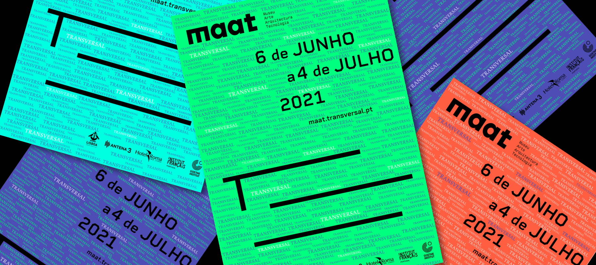
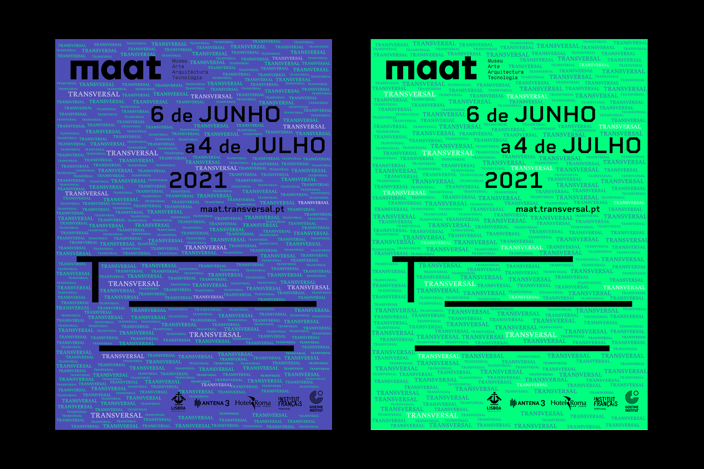
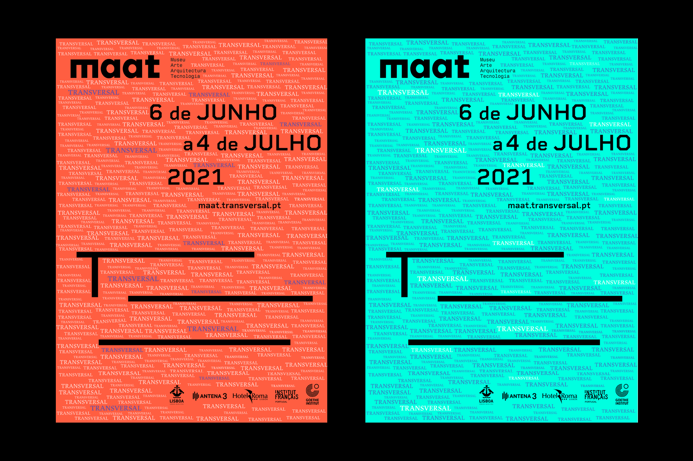
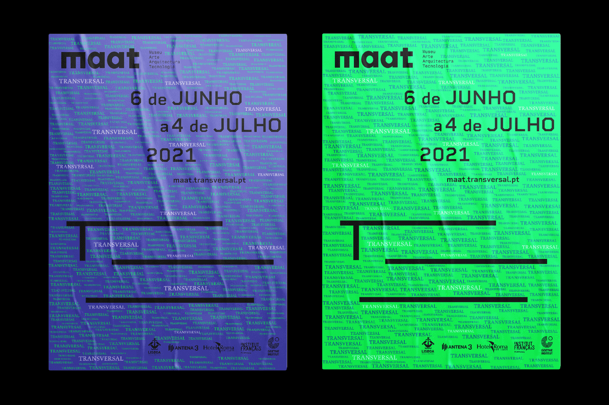
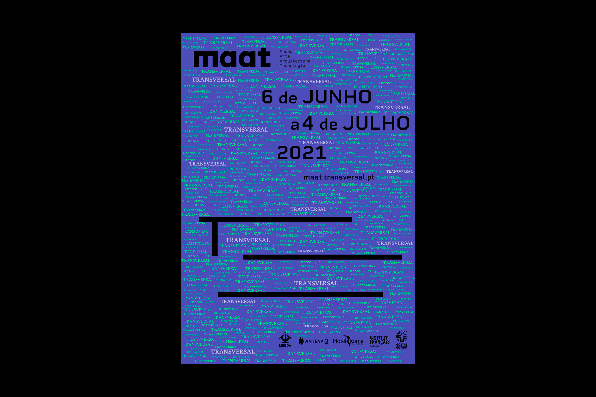
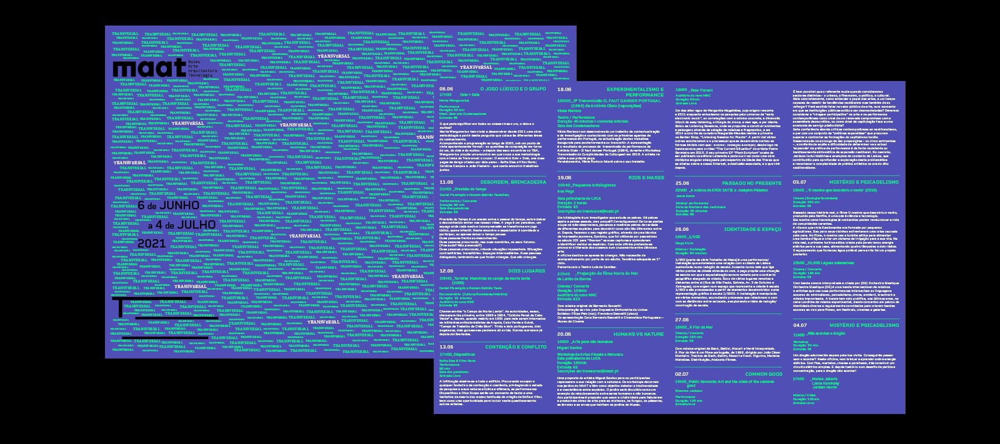
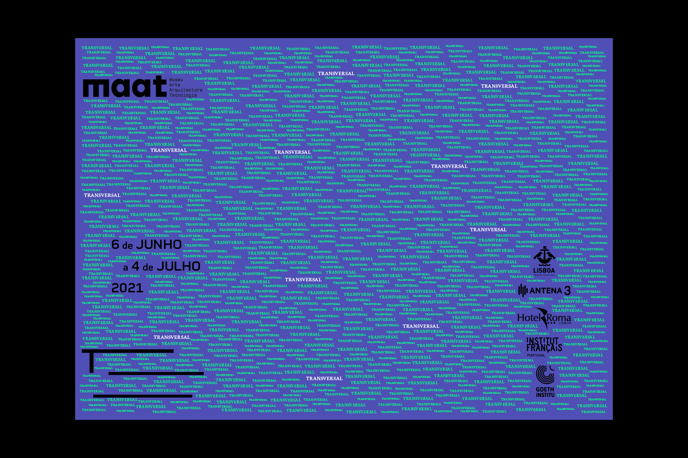
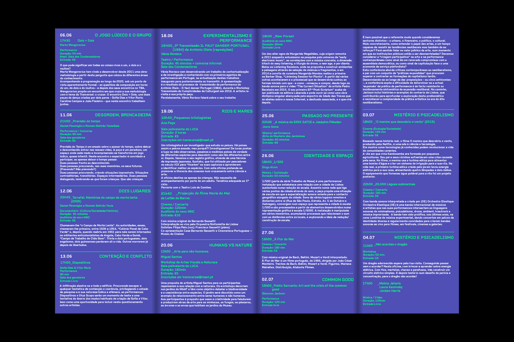
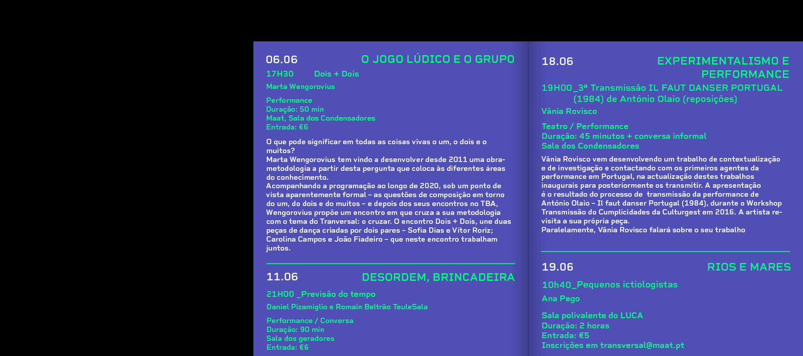

MAAT - Transversal
Academic Project | 2021
Graphic identity design for the new (fictional) cultural program of the Museum of Art, Architecture and
Technology, MAAT TRANSVERSAL. This program completes the long-term exhibitions with other events of an
ephemeral nature in a series of works in the field of fine arts, performance, music, installation, video
and mix media.








